The space, rendered and in section.
Perspectives
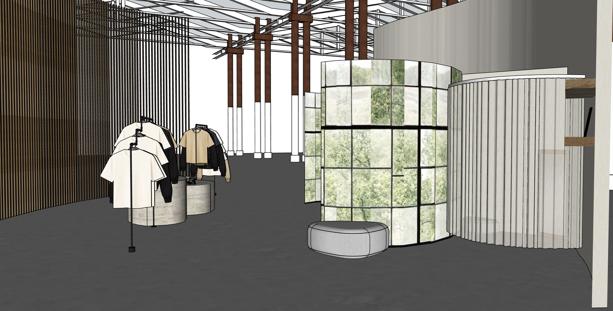
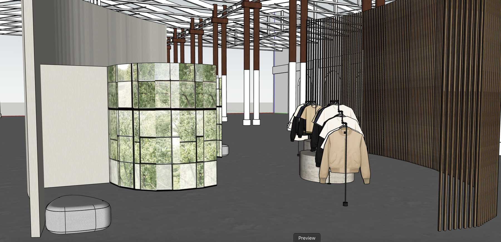
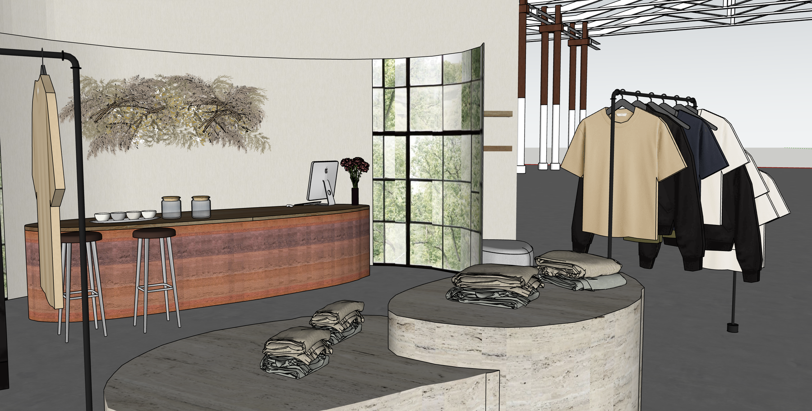
Elevations
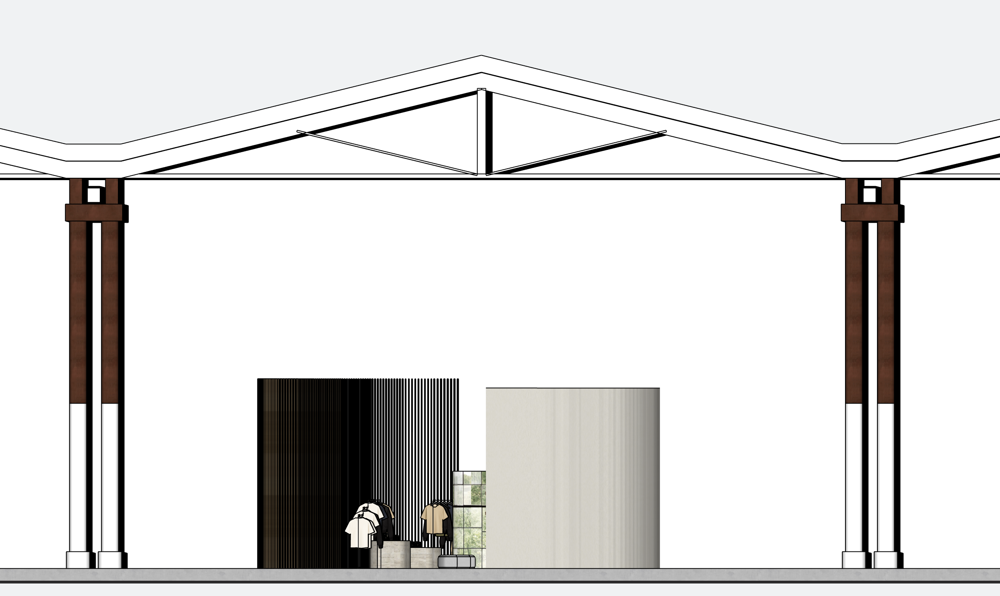
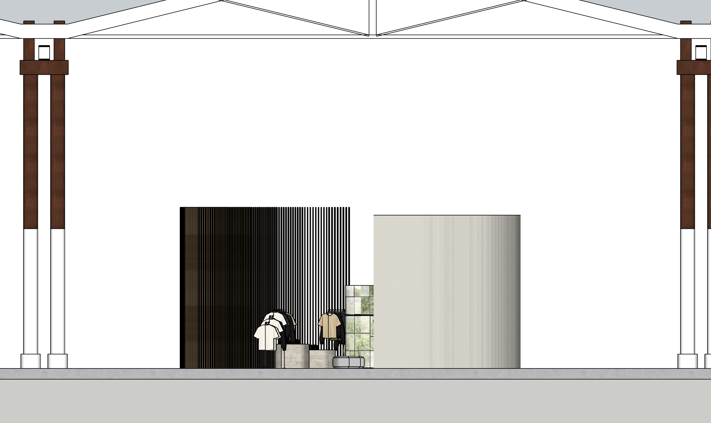
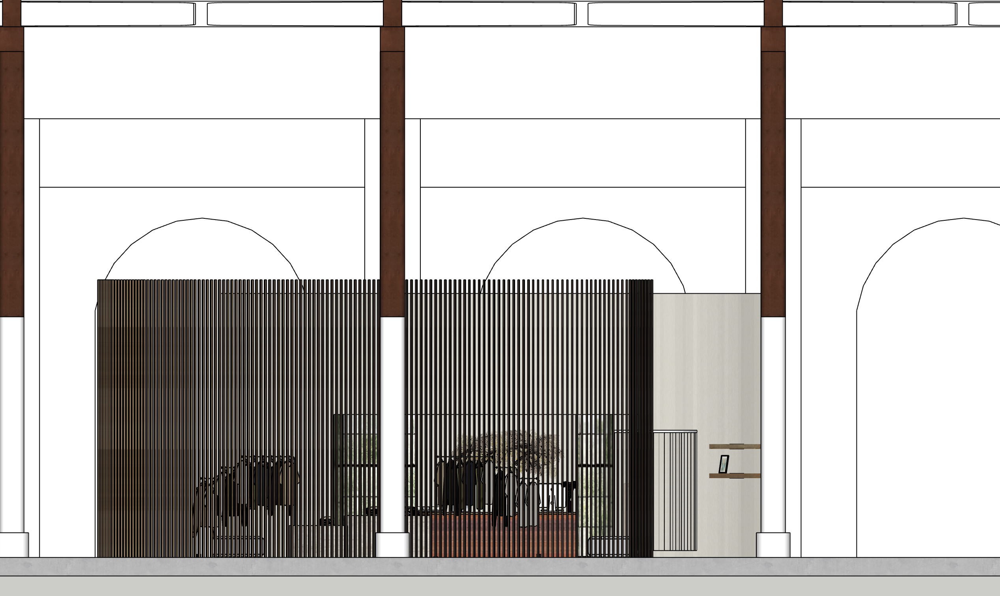
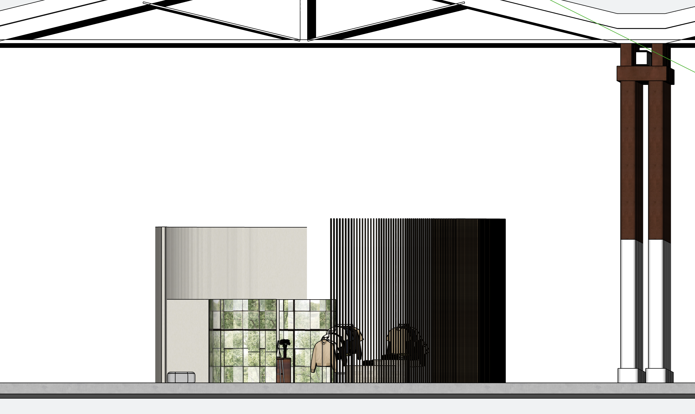
Atmosphere
Sample board
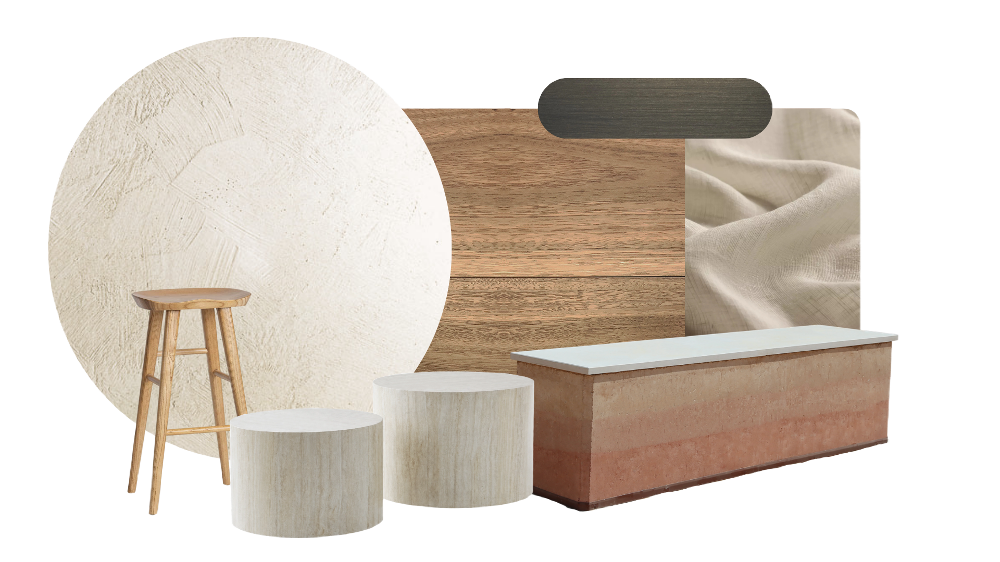
Show the coded key and product names
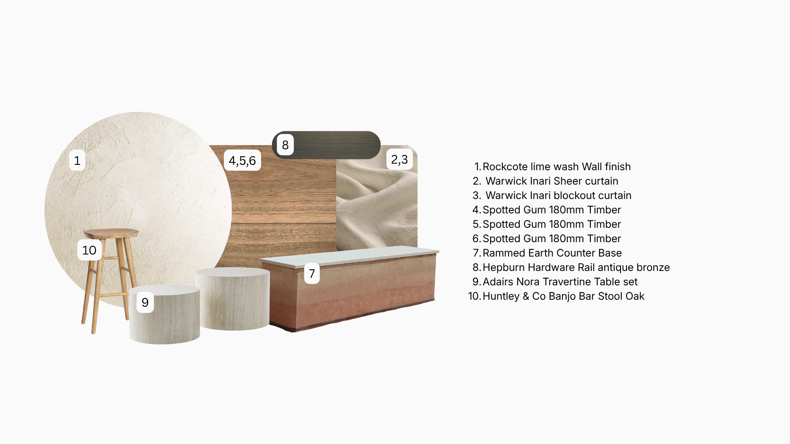
Schedule of finishes, furniture and fixtures
The full FF&E board: fifteen line items, each with its supplier, cost, a product photo and sustainability notes.
| Code | Item & description | Application | Supplier | Cost | Photo | Sustainability notes |
|---|---|---|---|---|---|---|
| FINISHES and FIXED ELEMENTS | ||||||
| RC-LW15 | Rockcote Lime Wash Mineral lime wash. Tint: 'Warm Limestone', natural yellow-ochre oxide at light dosage (warm neutral). featured | Walls, retail space | Rockcote | ~$85 / 15L pail | 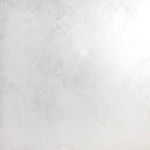 | Natural mineral product. Zero VOCs. Breathable, regulates moisture in wall. Biodegradable. No synthetic binders. Recyclable packaging (cardboard pail). End of life: plaster returned to earth. |
| FIN04ANGO | Warwick Inari Sheer, Angora | Curtains in front of timber battens, retail zone | Warwick Fabrics | POA (trade) |  | 70% linen / 30% wool. Both natural fibres, linen is one of the lowest water-use crops; wool is renewable and biodegradable. FR-rated without chemical treatment. Donated to textile recycler at end of festival. |
| WAR-BO | Warwick Blockout curtain fabric Blockout range | Curtains, change rooms | Warwick Fabrics | POA (trade) | 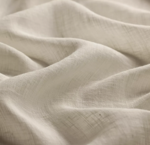 | Blockout linen-look. Same natural fibre blend as Inari sheer. Donated post-festival. Avoids synthetic blackout coatings where possible, confirm with Warwick at order stage. |
| ET-SG | Spotted Gum 180mm Timber featured | Benchtop over rammed earth counter | Safety & Civil Supply Co. | $78.57 / m² ex GST |  | Engineered timber uses less old-growth timber than solid hardwood. Spotted gum is a fast-growing Australian native. FSC certification recommended, confirm at order. Offcuts repurposed (items 5 and 6). Can be salvaged and resold post-festival. |
| ET-SG | Spotted Gum 180mm Timber (offcuts) Same product as above, fabricated from offcuts | Custom shelves outside change room | Safety & Civil Supply Co. | From offcuts, nil/minimal extra |  | Offcuts, zero additional material waste. Circular use of resource. No new timber required. |
| ET-SG | Spotted Gum 180mm Timber Same product as above, run as large battens | Large battens behind sheer curtains | Safety & Civil Supply Co. | $78.57 / m² ex GST | 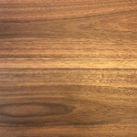 | Engineered timber uses less old-growth timber than solid hardwood. Spotted gum is a fast-growing Australian native. FSC certification recommended, confirm at order. Offcuts repurposed (items 5 and 6). Can be salvaged and resold post-festival. |
| FURNITURE and FIXTURES | ||||||
| REC-CB01 | Rammed Earth Counter Base featured | Counter base (supports spotted gum benchtop) | Rammed Earth Constructions | POA (custom) | 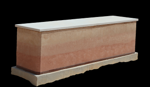 | Rammed earth is one of the most sustainable building materials available. Raw subsoil only, no cement required for temporary installation. 100% returned to earth post-festival. Zero embodied carbon disposal. |
| HH-URB-AB | Hepburn Hardware Utility Rail End Brackets Solid brass, antique bronze | Curtain rail + garment/clothing racks (coathanger rail) | Hepburn Hardware | $124.00 per bracket | 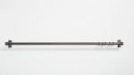 | Solid brass, highly durable, recyclable at end of life. Antique bronze finish is a patina process, not a coating, so no toxic stripping required. Long lifespan reduces replacement frequency. |
| 56014RVN0073086 | Adairs Nora Travertine Table set | Display tables between garment racks | Adairs | $499.99 / set of 2 | 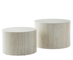 | Faux travertine (MDF + laminate). Lower sustainability credentials than natural stone but lighter and reusable. Can be resold or donated post-festival via Adairs takeback or marketplace. |
| HUN-BANJO-OAK | Huntley & Co Banjo Bar Stool Oak (x3, HIRE) | Personalisation bar seating | Huntley + Co | POA (hire), qty 3 | 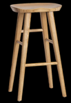 | Hire item, no ownership, no disposal. Lowest embodied carbon option for furniture. Oak is a renewable hardwood. Returned to Huntley + Co after festival. |
| BW-01 | Dried Flower / Pressed Botanical Wall Custom feature wall | Feature wall | Grandiflora | POA (custom) | 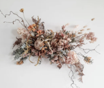 | Dried botanical specimens sourced locally (eucalyptus, grasses, seed pods). Compostable at end of festival. Jute twine is biodegradable. Zero synthetic materials. |
| LIGHTING (all 2700K warm white LED, daytime operation) | ||||||
| DOM-FINO-27 | LED Strip Behind Botanical Panels, 2700K Domus Lighting FINO | Decorative, backlit panels | Domus Lighting | POA | LED strip, energy efficient, long lifespan (50,000+ hrs). Reused post-festival. No mercury (unlike fluorescent). Low heat output. | |
| BG-D900-27 | Concealed LED in Ceiling Batten, 2700K Brightgreen | Decorative, ceiling | Brightgreen | POA | LED strip, energy efficient, long lifespan (50,000+ hrs). Reused post-festival. No mercury (unlike fluorescent). Low heat output. | |
| INL-UW-27 | Narrow Wash Uplighters, 2700K Inlite | Accent, timber battens | Inlite | POA | LED strip, energy efficient, long lifespan (50,000+ hrs). Reused post-festival. No mercury (unlike fluorescent). Low heat output. | |
| DOM-LS-27 | Recessed LED Strip Under Counter, 2700K Domus Lighting | Accent, counter lip | Domus Lighting | POA | LED strip, energy efficient, long lifespan (50,000+ hrs). Reused post-festival. No mercury (unlike fluorescent). Low heat output. | |
Costs indicative. POA means price on application. The existing concrete floor is retained, so no new material and no cost.
Three materials, followed cradle to grave
The three finishes carrying the strongest sustainability story, researched from what they actually are through to where they end up.
Every part of the build has somewhere to go after three weeks. Nothing is made just to be binned.
Target: zero landfill.
Four questions to answer:
- What was successful about the design?
- What changes would better communicate the concept?
- What were the challenges in translating concept into space?
- How would I improve my concept-development process?